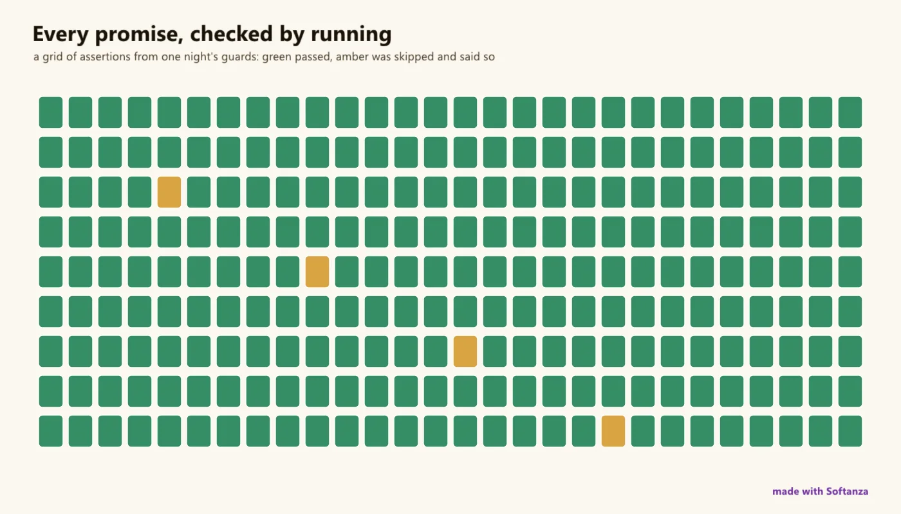

Test & quality system
Narrated guards as specifications, numpy and LAPACK oracles, an adversarial gate with negative controls, one rule gate; no coverage or CI.
4 Strong · 6 Solid · 2 Partial · 0 Emerging
Measured against: pytest · Hypothesis · libFuzzer · SonarQube · Folders: base/test · base/meta · base/engine · The guide to this area's functions

Rethought from first principles
What Softanza kept from what works, and what it rethought, as the library wrote it down in its design documents and narrations.
The Softanza wayEvery expected value written down is a promise, and it counts only once a run that could have failed has kept it.
Kept from the best practice
- Tests are scenarios in Given, When, Then form, so the output reads as a specification and a failure shows what was expected and what came. source
- The engine's parsers of untrusted input are fuzzed with sanitizers on, and property tests are themselves checked by mutation: deliberately broken versions must fail. source
- Results are pinned against an independent reference, such as values generated by NumPy for matrices and by R for statistical smoothers. source
Rethought
- Thousands of example lines record what they should print. Nothing compared them, so a harness now runs each file and checks those promises in order. source
- A check that can only pass proves nothing: each positive case gets a negative sibling, and the harness is run on deliberately wrong promises to watch it fail. source
- An identity is not a self-check: a formula built from one set of numbers can never fail. A real check compares two independent measurements of the same truth. source
- The full suite is a gate run once before each commit, not after every edit. New checks start as standalone probes, so each edit gets a verdict in seconds. source
Softanza has no test framework as a module; it has a test-and-quality discipline spread across the estate, whose signature is that a test is a readable specification and a green checkmark is never enough. 455 narrated guards read as Given/When/Then specs, correctness is proven against independent numpy/LAPACK oracles and byte-parity ground truth, and an adversarial gate of 1,416 assertions carries 58 negative controls. Where it is thin: property/mutation is engine-only, there is no coverage instrumentation and no CI, and the classic suites carry a fidelity backlog.
What a maker does with it, and what stands out
- A test is a readable specification: 455 narrated Given/When/Then guards
- Correctness proven against independent numpy/LAPACK oracles, not self-captured snapshots
- An adversarial gate of 1,416 assertions each born from an escaped defect, with 58 negative controls
- One rule gate collecting code, security, agent and diagram findings in a single shape
What is owed
- A standard CI pipeline running the rule gate on every push
- Coverage instrumentation (line/branch) for the engine and guards
- Haro-side property testing and a shipped assertion module
- Close the fidelity-grind backlog (1,312 #ERR in the classic suites)
The Softanza way, run
What Softanza does differently in this area, shown by code taken from its narrations and guards, and run for this page.
The checker that keeps the threat model honest is itself shown catching a fake row with no proof and a guard that does not exist.
cFake = "## 3. Guarantees" + char(10) +
"| G98 | a claim | code | `base/test/security/no_such_guard_narrated.ring` (5) | A01 | - |" + char(10) +
"| G99 | an unproven claim | code | nothing here | A01 | - |" + char(10) +
"## 4. Open risks" + char(10)
aFR = GuaranteeRows(cFake)
Then("it reads both fake rows", len(aFR), 2)
Then("it flags the row with no proof", len(RowsWithoutProof(aFR)), 1)
Then("it flags the guard that does not exist", len(MissingPaths(GuardPaths(aFR))), 1)THEN it reads both fake rows [PASS] THEN it flags the row with no proof [PASS] THEN it flags the guard that does not exist [PASS]
run on 2026-10-01 21:18 inside the library at commit 0e72e2e2c; taken from base/test/security/threat_model_narrated.ring
The lanes, one by one
Lanes and their notes are quoted as they were read at the source, on Read from the source on 2026-09-17, from a read-only main worktree -- base/test/_narrated (455 guards), base/meta/promises.py (~8,500 #--> markers), engine test blocks (151/371 files), fuzzers and props, _gen_numpy_reference.py, plot.zig, stzRuleReport + stzPredicateSet, health in base/test/_STATUS.md / _FINDINGS.md.